This document describes the step to add the per object glow effect into your Unity 3D projects.
Also you will be introduced how to create custom materials and shaders and additional features for this effect.
This asset has been tested with Unity 3.5.6 which is the minimum requirement and Unity 4.x
You need at least Shader Model 3.0 to display this effect..
1: The installation of the sample scene into a new project.
1.3 Layer settings.
1.6 Testing scenes.
2: The import of this asset in a new or existing Unity3D project without the sample scene.
3: The creation of simple glow materials and binding to GameObjects.
4: A simple introduction to the material/shader types.
4.4 Fluid Glow.
4.5 Particle Glow.
4.6 Pulse Glow.
5: Common hints to the shader performance and basic functions.
5.1 Enabling or disabling the Glow Asset.
5.2 External set of the global glow strength.
5.3 External set of the global blur radius.
5.4 External set of the global screen glow factor.
5.5 Glow Base Shader performance hint.
1.1 Complete Asset Import.
At first import the UnityFreeGlowAsset.package completely into a new project.
The PreviewScene.scene is located at IndieGlow/PreviewScene/UnityScenes in your project window.
Image 1.1
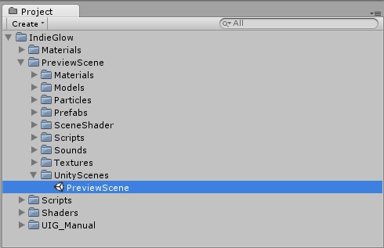
1.2 Layer definition.
The sample scene requires 3 global Layer: GlowObject, Laser and Player.
The Layer should be added by using Edit/Project Settings/Tags.
Image 1.2
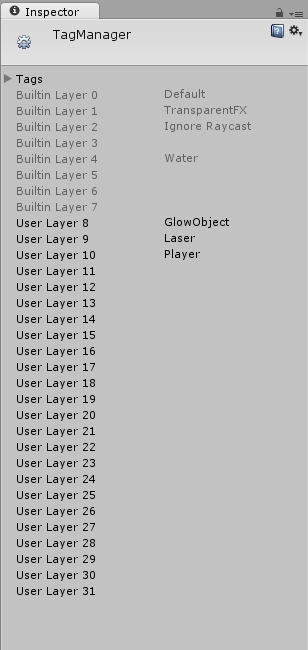
1.3 Layer settings.
Now you need to igonore collisions between the Laser and Player Layer, which an be set at the Physics Settings.
This can be found at Edit/Project Settings/Physics.
Image 1.3
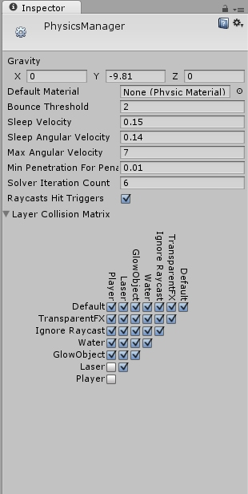
1.4 Physic Time settings.
Now you need to set the Fixed Update Rate of the Physics Engine, so that the laser (GameObject) collisions with the scene objects will be improved.
This can be done at Edit/Project Settings/Time.
Image 1.4
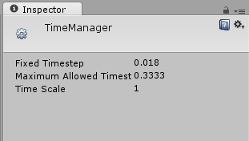
The standard Fixed Timestep Rate is set to a minimum of 0.02 ms, we change this to 0.015
1.5 Quality settings.
The only thing missing now is the Quality Setting to impriove the lighting of the predefined scene geometry.
Here we raise the PerPixelLightCount from 2 to 7.
Also we change the "VSync Count" to "Dont Sync".
Image 1.5
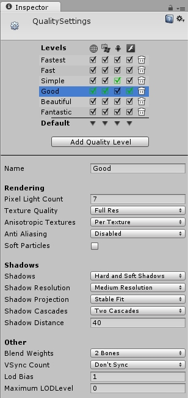
1.6 Testing scenes.
The configuration is completed we can now press the Play button and move in our scene.
Image 1.6
2.1 Asset Import without the sample scene.
Firstly we import UnityFreeGlowAsset.package without the sample scene.
Deactivate the checkbox at IndieGlow/PreviewScene.
Image 2.1
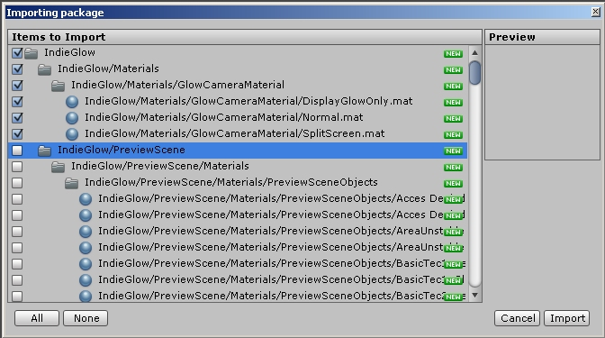
2.2 Glow Layer definition.
Add the "GlowObject" Layer like previously described in Step 1.2 .
Image 2.2
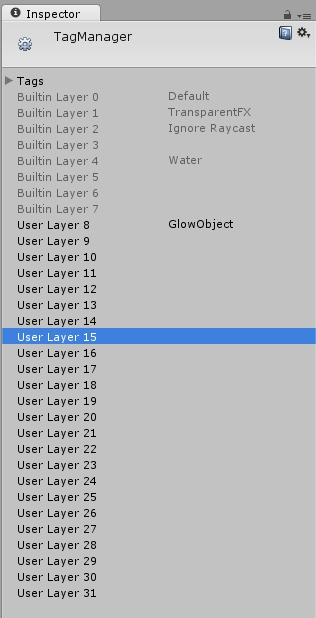
2.3 Glow Script binding.
You need to assign the "GlowCamera" Script to your Camera GameObject.
Activate the CheckBox "Debug Mode" if you wish to display a small HUD which exposes most of the component features.
Image 2.3
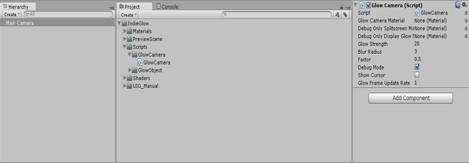
2.4 Glow Script settings.
Now we will need to add several materials to the GlowCamera.
Lokate the directory IndieGlow/Materials/GlowCameraMaterial.
You need to assign 3 materials.
Simply move the 3 materials from the GlowCameraMaterial directory onto the empty slots of the GlowCamera component.
Image 2.4
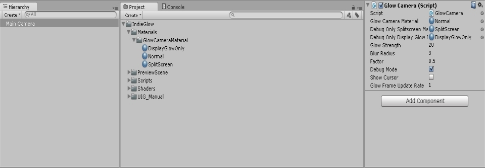
The basic setup has been completed
3.1 Glow Material creation.
A Glow Material is the material to use on your objects you want to let glow. You assign the material to the GlowObject component this object needs.
We start with the creation of a new material "Assets/Create/Material".
Assign a glow shader to this material, for example the simple static Glow without any other special effect.
Choose IndiGlowLab/ObjectShader/GlowMaskShader_Default_Ranged for this sample.
Image 3.1
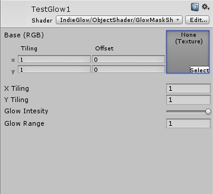
Assign a glow texture to the Base(RBG) Texture2D field.
This texture defines the area which should glow, a dark value means no or a low intensity glow and any other value the opposite.
The alpha channel will not be used.
Specify the texture repeat by changing the "X / Y Tiling" field.
"Glow Intesity" will change the overall intensity of the glow.
"Glow Range" specifies how far the glow will be visible by the distance to the camera and how much the overglow effect should appear based upon the distance to the camera too, a value of 10 is a good start here.
The range is specified by world units.
With this you can select the range per object
Play with the values when in play mode to find the best for your scene. Also have a look at the sample materials from the preview scene
3.2 Glow Object Script binding.
Add the GlowObject component to the GameObject you want to let glow.
You can find this component at: IndieGlow/Scripts/GlowObject/GlowObject.
Image 3.2
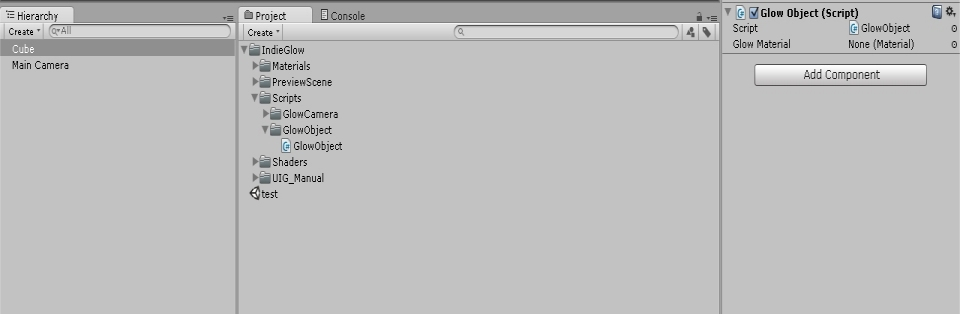
3.3 Glow Object Script setting.
Assign the material we created at step 3.1 to this component.
You can also assign any other material to the renderer of the GameObject as you would do without the glow.
Image 3.3
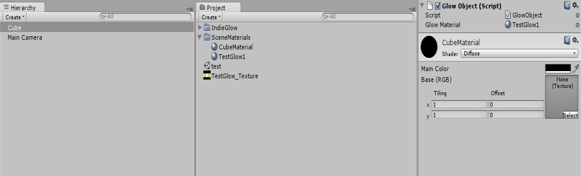
We gave the "TestGlow1" material a simple texture
Image 3.3.1
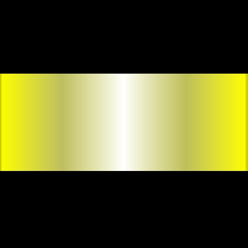
This is how it will loook in play mode.
Image 3.3.2
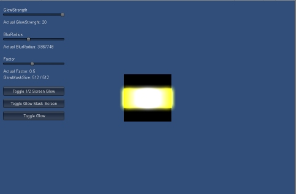
3.4 Glow Object Material configuration.
You can configure the glow material at runtime as long as you have activated the Debug Mode at the GlowCamera component which should be assigned to your camera.
Press the Tab key to display the cursor or activate the "ShowCursor" Mode at the GlowCamera component before start.
Now select your glow material and change for example the intensity at runtime.
When the glow is not visible it is possible that your GameObject is too far away, you can change this by changing the "Glow Range".
All changed values will still be set after you exit the play mode.
Image 3.4
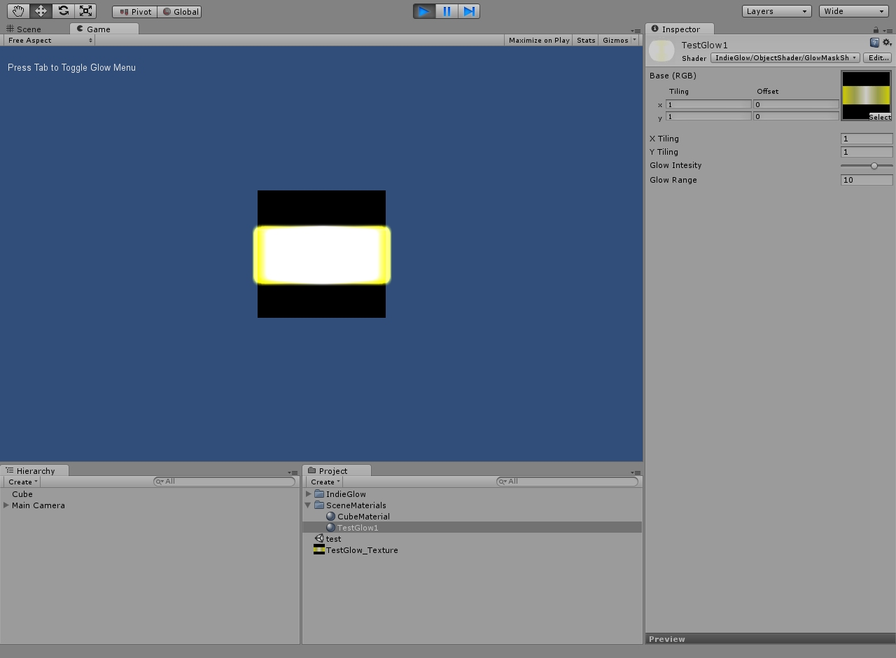
4.1 Glow Shader types.
The asset contains 6 different shader variations.
1: Default Glow (static not animated glow)
2: UV animated Glow (Simple scroll on the U or V axis of the texture)
3: UV animated Pulse Glow (UV animated with pulsating glow intensity)
4: Fluid Glow ( UV animated glow with wave like movement of the texture)
5: Particle Glow (A simple shader made for particle effects)
6: Pulse Glow (Static glow with pulsating glow intensity)
The default glow has been described at step 3.4 so we skip it here.
4.2 UV animated Glow.
Shader Type: UV animated Glow.
Image 4.2
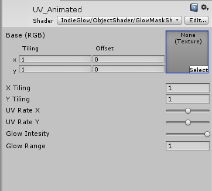
X/Y Tiling specified the texture repeats.
UV Rate X specifies the scroll speed at the horizontal axis.
UV Rate Y specifies the scroll speed at the vertical axis..
Glow Intesity will change the overall intensity of the glow.
Glow Range specifies how far the glow will be visible by the distance to the camera
4.3 UV animated Pulse Glow.
Shader Type: UV animated Pulse Glow.
Image 4.3
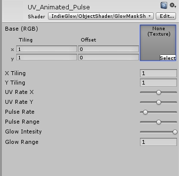
X/Y Tiling specified the texture repeats.
UV Rate X specifies the scroll speed at the horizontal axis.
UV Rate Y specifies the scroll speed at the vertical axis..
Pulse Rate specifies the pulse frequency.
Pulse Range specifies the pulse intensity min and max value.
Glow Intesity will change the overall intensity of the glow.
Glow Range specifies how far the glow will be visible by the distance to the camera
4.4 Fluid Glow.
Shader Type: Fluid Glow.
Image 4.4
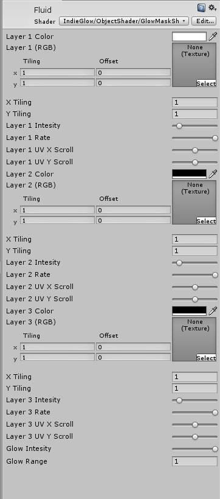
X/Y Tiling specified the texture repeats.
UV Rate X specifies the scroll speed at the horizontal axis.
UV Rate Y specifies the scroll speed at the vertical axis..
Pulse Rate specifies the pulse frequency.
Pulse Range specifies the pulse intensity min and max value.
Glow Intesity will change the overall intensity of the glow.
Glow Range specifies how far the glow will be visible by the distance to the camera
Intensity specifies the speed of the Layer Pixel movement.
Rate specifies the range of the Layer Pixel movement.
To use layer 2 and 3 you need the increase the color in a grayscale spectrum of the layer.
Black will hide the layer.
4.5 Particle Glow.
Shader Type: Particle Glow.
Image 4.5
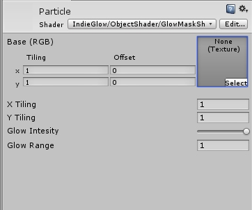
Glow Intesity will change the overall intensity of the glow.
Glow Range specifies how far the glow will be visible by the distance to the camera
4.6 Pulse Glow.
Shader Type: Pulse Glow.
Bild 4.6
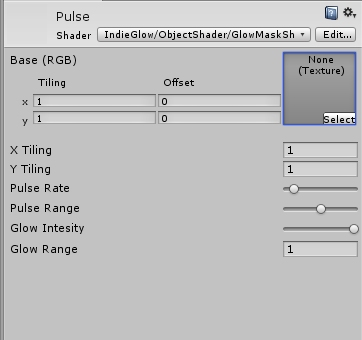
X/Y Tiling specified the texture repeats.
Pulse Rate specifies the pulse frequency.
Pulse Range specifies the pulse intensity min and max value.
Glow Intesity will change the overall intensity of the glow.
Glow Range specifies how far the glow will be visible by the distance to the camera
5.1 Enabling or disabling the Glow Asset.
Activate or deactivate the glow effect by using following method.
GlowCamera.ActivateGlowShader(Boolean); <true/false>
5.2 External set of the global glow strength.
Set the global glow strength.
GlowCamera.SetGlobalGlowStrength(Value); <0.0f/20.0f>
Schritt 5.3 External set of the global blur radius.
Set the global BlurRadius.
GlowCamera.SetGlobalBlurRadius(Value); <0.0f/20.0f>
5.4 External set of the global screen glow factor.
Set the gloabal factors of the Glow Mask texture resolution.
GlowCamera.SetGlobalFactor(Value); <0.055f/1.0f>
5.5 Glow Base Shader performance hint.
A small performance tweak is to edit the GlowShader_Base.shader to reduce or increase the gpu usage which also results in a better or lower quality.
Look at the function: half4 blur(half2 radius, half2 uvOriginal, half2 clampMax) {
At line 50 change the Blur Segement amount.
int Segments = 16; // Min 4 / Max 20 Segments
A lower count will reduce the GPU usage but will also lower the visual quality.
5.6 Creating glow objects at runtime.
Simply create a prefab with the needed components.
For example the Laser prefab at the sample preview scene.
5.7 Glow Factor Performance.
A Higher Factor ( Glow Mask Resolution ) needs more Performance.
The Default Value is 0.5 but you can Change it.